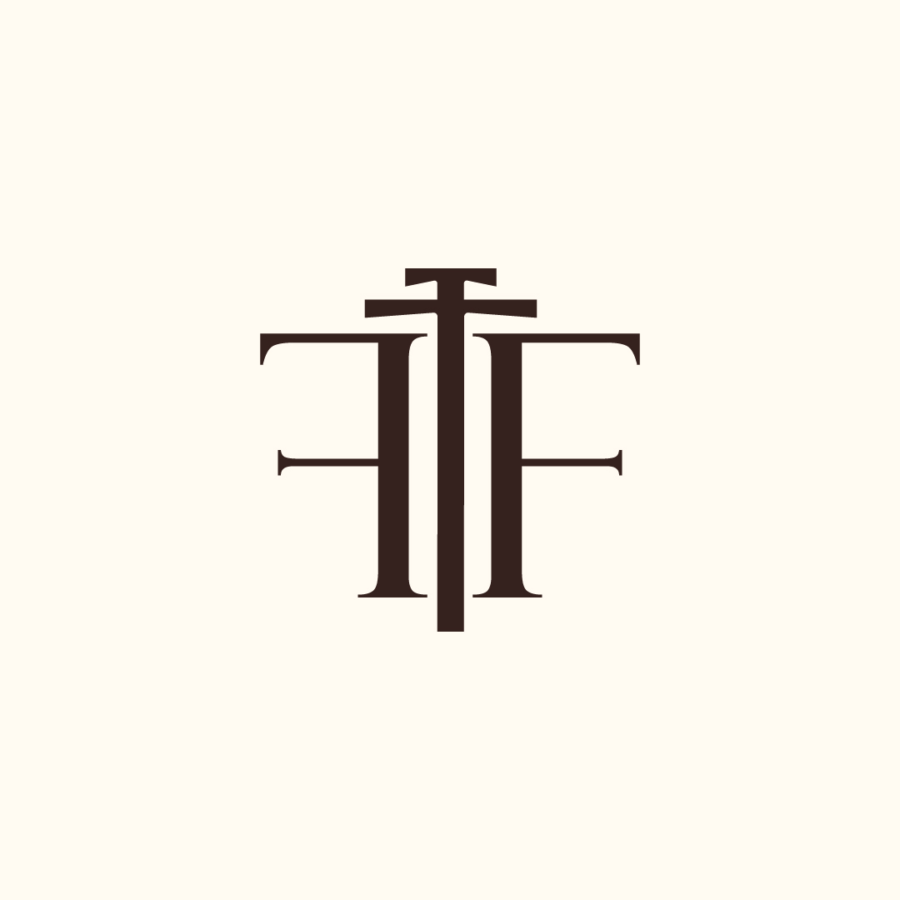

CASE STUDIES
Explora el tipo de proyecto

Identity
FOXDEV Visual ID
Logo, isotipo y direccion visual para una presencia personal consistente.
Landing
Creative Landing
Pagina de conversion con hero inmersivo, scroll reveal y CTA claros.
Interface
Dashboard Concept
Panel operativo con jerarquia visual, tarjetas y microinteracciones.
Experience
Portfolio System
Sistema multipagina con navegacion, modal, tema claro/oscuro y contacto.
Flujo claro
Cada proyecto se organiza para que el usuario entienda rapido donde esta y que puede hacer.
Interaccion medida
Animaciones suaves, feedback visual y controles que no distraen del contenido principal.
Base limpia
HTML semantico, CSS por componentes y JavaScript separado del marcado.
Listo para publicar
Rutas organizadas, assets locales y estructura facil de mover a hosting.
PROJECT DEPTH
Como leo cada caso
Identidad FOXDEV
Uso del logo, isotipo y fotografia oscura para construir una presencia reconocible, elegante y coherente en todas las paginas.
Oferta enfocada
Secciones reducidas, mensaje principal fuerte, CTA visibles y suficiente informacion para que una marca pueda captar clientes.
UI operativa
Componentes de datos, paneles, metricas y estados interactivos pensados para leer informacion rapido y tomar decisiones.
Portfolio modular
Paginas separadas, nav activa, footer consistente, formularios, filtros, modal y controles que se pueden extender con mas contenido.
CASE VALUE
Que valor demuestra el portfolio
Capacidad visual
Las imagenes, fondos, tarjetas y jerarquia muestran criterio estetico y una direccion de arte consistente para marcas digitales.
Capacidad tecnica
El carrusel, modal, filtros, tema claro/oscuro y formulario prueban interactividad real con JavaScript separado del contenido.
Capacidad de orden
La division multipagina ayuda a mostrar informacion sin saturar una sola landing y permite crecer secciones por separado.
Capacidad de venta
Los casos conectan servicios, contacto y colaboraciones para que el portfolio no solo se vea bien, tambien genere conversacion.